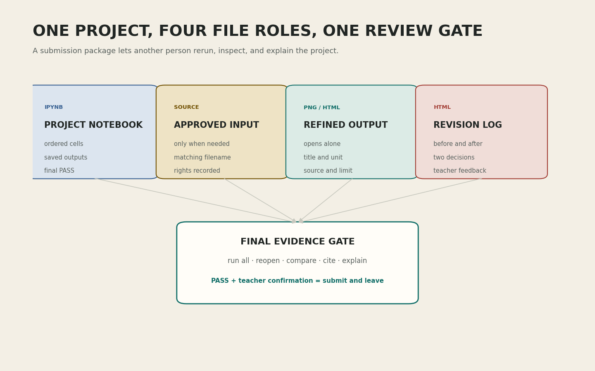

좋은 검사는 성공 장면보다 실패 지점을 정확하게 보여 준다
강의 개요
수정 계약서를 검증 가능한 문장으로 다듬고, 전체 입력, 새 런타임, 오류 메시지, 화면, 파일, 출처의 순서로 프로젝트 품질을 점검합니다.
학습 목표
오류의 위치와 원인을 구분하고, 결과 파일을 제작 환경 밖에서 확인하며, 제출 파일마다 역할과 이름을 부여합니다.
학습 성과
검증 순서, 예상 실패, 대체 행동, 제출 파일을 담은 3교시 준비 카드를 작성하고 제한된 면담으로 범위를 확인받을 수 있습니다.
- 0-7분수정 계약서 인계
- 7-16분전체 입력 검증
- 16-26분오류 메시지 읽기
- 26-36분화면과 파일 QA
- 36-43분제출 패키지
- 43-50분신청자 면담
- 50-60분선택 확장
0-7분 · 수정 계약서를 검사 문장으로 바꾸기
1교시의 수정 계약서를 다시 엽니다. “레이아웃을 개선한다”처럼 결과가 열려 있는 문장은 검사가 불가능합니다. “저장된 1600 × 1000 PNG에서 제목, 범례, 출처가 잘리지 않는다”처럼 관찰 가능한 문장으로 바꿉니다.
오늘 사용할 품질 검증 순서
- 입력: 전체 자료의 행, 길이, 범위, 비어 있는 값을 확인합니다.
- 실행: 기억이 남지 않은 새 런타임에서 처음부터 실행합니다.
- 화면: 처리 값과 화면 요소, 레이블과 대비를 비교합니다.
- 파일: 결과 파일을 노트북 밖에서 열기 단계로 독립성을 확인합니다.
- 설명: 출처, 이용 조건, 기준일, 한계가 결과와 함께 남는지 봅니다.
검증 순서를 정하면 실패를 만났을 때 어디로 돌아갈지 알 수 있습니다. 입력이 틀렸는데 색을 고치거나, 파일이 저장되지 않았는데 발표 문장을 다듬는 일을 줄일 수 있습니다.
확인: 사람이 눈으로 보면 자동 검사는 필요 없는가?
눈은 맥락과 가독성을 판단하는 데 강하지만 수량, 파일 크기, 반복 실행을 놓칠 수 있습니다. 자동 검사는 반복 가능한 조건을 맡고, 사람은 질문의 적절성과 표현의 의미를 확인합니다.
확인: 한 번에 모든 항목을 검사하면 더 빠른가?
오류가 여러 개 나타나면 원인을 구분하기 어렵습니다. 입력에서 시작해 실행, 화면, 파일, 설명으로 이동하면 앞 단계의 문제가 뒤 단계에 미치는 영향을 줄일 수 있습니다.
7-16분 · 예제 한 조각이 아니라 전체 입력 검증하기
전체 입력 검증은 파일을 모두 눈으로 읽는 일이 아닙니다. 입력의 크기, 자료형, 최솟값과 최댓값, 비어 있는 값, 예상하지 않은 범주를 요약하고 위험한 지점을 골라 확인하는 과정입니다.
| 경로 | 먼저 셀 것 | 경계 사례 | 완료 증거 |
|---|---|---|---|
| 데이터 | 행, 열, 결측값, 범주 수 | 숫자 열의 문자, 중복 행, 0과 음수 | 제외 전후 행 수와 집계 합계 |
| 텍스트 | 문자 수, 토큰 수, 고유 단어 수 | 대소문자, 문장 부호, 한 글자 토큰 | 정규화 전후 수와 상위 단어 위치 |
| 사운드 | 채널, 샘플레이트, 길이, 최대 진폭 | 무음, 스테레오, 너무 짧은 파일 | 초 단위 길이와 프레임 수 |
| 규칙 이미지 | 형태 수, 좌표와 크기 범위 | 음수 크기, 화면 밖 좌표, 겹침 | 모든 경계와 생성 수량 검사 |
전체 입력을 검사한 뒤에는 새 런타임에서 다시 실행합니다. 현재 메모리에 남은 변수나 이전 셀의 결과가 없어도 작동해야 제출받은 사람이 같은 결과를 만들 수 있습니다.
확인: 첫 다섯 행이 정상이면 데이터 전체도 정상인가?
첫 부분은 형식을 이해하는 데 도움이 되지만 뒤쪽의 결측값, 새 범주, 극단값을 보장하지 않습니다. 요약 수치와 조건 검사를 전체 행에 적용해야 합니다.
확인: 새 런타임에서만 생기는 오류는 코드 오류가 아닌가?
대개 숨은 실행 순서나 설치되지 않은 라이브러리, 업로드되지 않은 파일에 의존했다는 신호입니다. 제출 재현성의 핵심 문제이므로 반드시 수정합니다.
16-26분 · 오류 메시지를 작업 지도로 읽기
오류 메시지는 실패 판정만 하는 문장이 아닙니다. 보통 오류 종류, 문제가 발견된 코드 위치, 실제 값에 대한 단서를 제공합니다. 마지막 줄에서 오류 이름을 읽고, 그 위의 호출 경로에서 자신이 작성한 셀을 찾습니다.
| 오류 또는 증상 | 뜻 | 첫 확인 | 피해야 할 대응 |
|---|---|---|---|
FileNotFoundError | 지정한 위치에 파일이 없음 | 현재 폴더, 실제 파일명, 업로드 여부 | 컴퓨터의 절대 경로를 그대로 붙여 넣기 |
KeyError | 요청한 열이나 키가 없음 | 실제 열 이름과 공백, 대소문자 | 오류가 날 때마다 임의의 열 이름 시도 |
ValueError | 값의 형식이나 범위가 맞지 않음 | 오류 직전 값과 자료형 | 모든 값을 문자로 바꾸기 |
| 빈 그래프 | 필터 뒤 값이 없거나 범위가 잘못됨 | 처리 배열 길이와 축 범위 | 축만 강제로 확대하기 |
| 저장 파일 없음 | 저장 셀이 실행되지 않았거나 경로가 다름 | 저장 직후 파일 존재 검사 | 화면 캡처로 대신하기 |
오류 기록 세 문장
“무엇을 실행했는가? 어떤 오류 이름과 실제 값이 나왔는가? 다음에는 어느 한 조건을 확인할 것인가?”를 기록합니다. 원인을 한 번에 추측하기보다 확인할 조건을 하나씩 줄입니다.
확인: 오류 메시지 전체를 검색창에 붙여 넣어도 되는가?
개인 경로와 자료 내용이 포함될 수 있습니다. 오류 종류와 핵심 문장만 사용하고, 먼저 공식 문서에서 뜻을 확인합니다. 자신의 입력 정보는 공개하지 않습니다.
확인: 오류를 try로 감추면 해결된 것인가?
오류를 이해하고 대체 행동을 제공할 때만 예외 처리가 유용합니다. 아무 일도 하지 않는 예외 처리는 잘못된 결과를 정상처럼 보이게 만들 수 있습니다.
26-36분 · 화면과 결과 파일을 따로 검사하기
노트북 안의 작은 미리보기만 보면 저장 과정에서 생긴 잘림, 글꼴 대체, 낮은 해상도를 놓칠 수 있습니다. 결과 파일을 노트북 밖에서 열기로 실제 제출 상태를 확인합니다.
독자가 값의 대상과 크기를 추측하지 않아도 되는지 봅니다.
처리 결과와 막대, 선, 도형의 수와 위치가 같은지 봅니다.
색 외에 레이블, 모양, 위치로도 구분되는지 봅니다.
1600 × 1000 크기와 가장자리 여백을 실제 파일에서 봅니다.
설명에는 출처, 이용 조건, 기준일, 한계가 포함되어야 합니다. 이 정보는 README가 없어도 수정 기록 HTML에서 찾을 수 있어야 하며, 결과를 과도하게 해석하지 않도록 범위를 제한합니다.
| 모호한 판단 | 검사 가능한 질문 | 증거 |
|---|---|---|
| 글자가 작다 | 원본 크기에서 제목과 축을 확대 없이 읽을 수 있는가? | 독립 파일의 100% 보기 |
| 색이 이상하다 | 핵심 글자와 배경의 대비가 충분하고 색 없이 구분되는가? | 대비 검사와 흑백 확인 |
| 그래프가 맞는 것 같다 | 처리 값 목록과 그래프 레이블이 항목별로 같은가? | 값 쌍 출력 |
| 파일이 저장됐다 | 다른 뷰어에서 열리고 규격이 맞는가? | 파일 존재, 형식, 픽셀 크기 |
확인: 화면 캡처를 결과 파일로 제출해도 되는가?
캡처는 코드가 정해진 크기로 결과를 저장했다는 증거가 아닙니다. 노트북의 저장 코드로 PNG 또는 HTML을 만들고 그 파일을 직접 엽니다.
확인: 범례가 있으면 모든 색의 뜻이 충분한가?
범례가 화면에서 멀거나 색 차이가 작으면 대응이 어렵습니다. 가능한 경우 항목에 직접 레이블을 붙이고 순서와 모양을 함께 사용합니다.
36-43분 · 제출 패키지는 작품과 재현 증거의 묶음이다

원본 PNG 열기 ↗| 파일 | 역할 | 열어서 확인할 것 |
|---|---|---|
week15_학번_이름_project.ipynb | 실행 가능한 제작 과정과 자동 검사 | 모두 실행 결과와 완료 문구 |
week15_학번_이름_refined.png | 70% 수정 결과 | 1600 × 1000, 잘림, 레이블 |
week15_학번_이름_revision_log.html | 수정 전후, 출처, 관찰, 한계 | 브라우저에서 독립적으로 열림 |
| 자신의 원본 파일 | 노트북 밖의 입력 재현 | 코드가 읽는 이름과 실제 이름 일치 |
제출 직전 이름을 바꾸면 노트북의 경로와 달라질 수 있습니다. 먼저 제출 이름을 정한 뒤 새 런타임에서 그 이름으로 다시 읽고 저장합니다. 수업 제공 입력은 노트북 안에 있으므로 별도 원본 파일이 필요하지 않습니다.
확인: 노트북만 제출하면 PNG도 안에 보이므로 충분한가?
노트북 출력은 지워지거나 환경에 따라 보이지 않을 수 있습니다. 발표와 기록에 사용할 독립 결과 파일을 따로 제출해야 합니다.
43-50분 · 신청자 면담으로 범위만 확인하기
신청자 면담은 긴 개인 발표가 아닙니다. 준비 카드와 수정 전 화면을 연 학생 가운데 최대 10명만 신청하고, 한 명당 60-90초 동안 다음 세 항목만 확인합니다.
- 수정 행동 두 가지가 서로 다른 대상과 완료 증거를 갖는가?
- 가장 위험한 실패와 대체 행동이 정해져 있는가?
- 제출 패키지의 필수 파일 이름이 확정되었는가?
대기 없는 운영 원칙
나머지 학생은 기다리지 않습니다. 자기 준비 카드의 검사 순서를 점검하거나 3교시 노트북을 내려받습니다. 신청자가 10명이면 면담은 최대 15분이지만 43-50분 안에는 먼저 준비된 항목만 확인하고, 남은 확인은 3교시의 완성 순서 대기열로 이어집니다.
3교시 최종 증거 확인은 더 짧습니다. 한 명당 30-45초로 화면 위치만 확인하므로 30명도 최대 22.5분입니다. 제작이 시작된 뒤 완료된 학생부터 병행하면 모든 학생이 차례를 기다리며 수업 시간을 잃지 않습니다.
확인: 면담을 신청하지 않으면 실습을 진행할 수 없는가?
그렇지 않습니다. 준비 카드의 조건이 명확하면 바로 3교시 실습을 시작합니다. 면담은 범위가 모호하거나 입력 권한, 대체 경로를 확인할 필요가 있는 학생을 위한 제한된 통로입니다.
확인: 면담에서 프로젝트 전체 코드를 보여 주어야 하는가?
코드 전체를 설명하지 않습니다. 수정 전 화면, 수정 계약서, 대체 행동이 적힌 위치만 열어 둡니다. 구현 검증은 3교시 자동 검사와 결과 파일로 진행합니다.
50-60분 · 선택 확장: 1분 설명 리허설
기본 준비 카드를 완성한 학생만 휴대전화 녹음 또는 개인 메모로 진행합니다. 다른 학생의 평가를 받는 활동은 하지 않습니다. 다음 네 문장을 1분 안에 말하고, 빠진 근거를 표시합니다.
- 내 질문과 입력은 무엇인가?
- 14주차 결과의 가장 큰 문제는 무엇이었는가?
- 어떤 두 가지를 고쳤으며 수정 후 무엇으로 확인하는가?
- 현재 결과로 말할 수 없는 한계는 무엇인가?
기본 50분 / 확장 60분
3교시 준비 카드에 검사 순서, 수정 행동, 대체 행동, 제출 파일이 있으면 기본 목표를 달성한 것입니다. 선택 리허설은 추가 점수와 무관합니다.
3교시 준비
노트북 사본, 14주차 기준 PNG, 수정 계약서, 자신의 입력을 쓸 경우 승인된 원본 파일을 한 폴더에 둡니다. 파일 이름을 먼저 확정하고 3교시에는 수정 행동 1부터 시작합니다. 설치와 업로드는 공통 안내 전에 마칩니다.
수업 후 개별 복습
- 전체 입력 검증과 첫 다섯 행 확인의 차이를 설명합니다.
- 새 런타임이 찾아내는 숨은 의존성 두 가지를 적습니다.
- 오류 메시지에서 먼저 읽을 정보 세 가지를 적습니다.
- 결과 파일을 노트북 밖에서 열어야 하는 이유를 한 문장으로 씁니다.
- 자신의 제출 패키지에 포함할 파일과 역할을 적습니다.
공식 문서
- Python 공식 튜토리얼: 오류와 예외문법 오류와 실행 중 예외, 오류 문장의 구조를 확인합니다.
- pandas 공식 안내: 결측값전체 입력에서 비어 있는 값을 찾고 다루는 기준을 확인합니다.
- Matplotlib 공식 안내: 백엔드실행 환경에 따라 화면 표시와 파일 저장 방식이 달라지는 이유를 확인합니다.
- W3C WCAG 2.2: 색상 사용색 외의 단서를 함께 제공하는 검토 기준을 확인합니다.